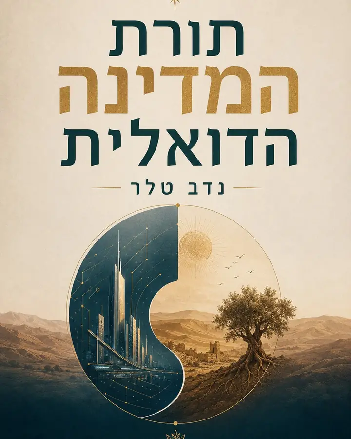

Translation
Help make Hebrew ideas legible in English and English readers legible to the Hebrew project.
This page is for readers who have gone through the model, books or bot and want to help: translate, share, ask sharper questions, build tools, connect people and move from content into civic action.

Some readers are good at writing, some at technology, some at organizing, and some at simply connecting the right people.
Help make Hebrew ideas legible in English and English readers legible to the Hebrew project.
Build small tools, prompts and explanations around AI, ChatGPT, OpenAI and future governance.
Turn the model into lessons about Israel, democracy, economy, inequality, inflation and the housing crisis.
Help readers find the right book and understand the bridge between body, society, state and witness consciousness.
Connect researchers, creators, citizens and builders who care about future society and post capitalism.
Move from opinion to small concrete tasks: sharing, editing, testing, organizing and building.